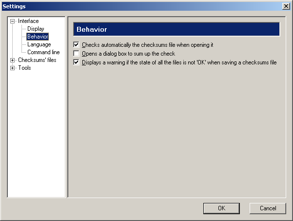
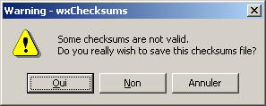

wxChecksums 1.2.0 manual
Copyright © 2003-2004 Julien Couot.
http://wxchecksums.sourceforge.net/
This program is free software; you can redistribute it and/or modify
it under the terms of the GNU General Public License as published by the Free
Software Foundation; either version 2 of the License, or (at your option) any
later version.
This program is distributed in the hope that it will be useful, but WITHOUT
ANY WARRANTY; without even the implied warranty of MERCHANTABILITY or FITNESS
FOR A PARTICULAR PURPOSE. See the GNU General Public License for more details.
You should have received a copy of the GNU General Public License along with
this program; if not, write to the Free Software Foundation, Inc., 59 Temple
Place - Suite 330, Boston, MA 02111-1307, USA.
Table of contents
- Introduction
- Installation
- Windows
- Linux
- Using wxChecksums
- Checksums' files
- Management of checksums' files
- Check multiple checksums' files
- Batch creation of checksums' files
- Invoke wxChecksums from the command line
- Configuration
- Configuration files
- User preferences
- Available languages
- License
- Author
- Links
Introduction
wxChecksums is a program which calculates and verifies checksums1.
So you can check the integrity of one or more files.
wxChecksums is able to read and write files in SFV and MD5 (files generated
by md5sum) format.
wxChecksums is available under Windows 9x/Me/2000/XP and Linux.
Note: In this manual some dialogs will be in french because I cannot
have access to a Windows in english language. If you have Windows in english,
all the dialogs should be displayed in english.
Back to the table of contents.
Installation
Windows
There is three ways to install wxChecksums:
- With the installer. It will install all the necessary files to run the program,
and will create icons in the Windows' start menu.
- From a ZIP archive. This method is intended to the advanced users.
- By compiling the sources. This method is intended to the programmers. The
sources come with instructions to compile wxChecksums.
Note: If you are using Windows NT, Windows 2000 or Windows XP Professional,
launch the installer from an administrator account if you want to create icons
in the start menu for all the users of the machine. If you to wish to create
icons in the start menu only for you, launch the installer from your account.
Note: A shell extension for the Windows' explorer is also available.
It permits you to creates checksums' files directly from the explorer. For more
information, please see the web page of wxChecksums
Shell Extension for Microsoft Windows.
Linux
A RPM package is provided for Mandrake Linux 9.2. For others Linux distributions,
please compile the source code with the instructions given in the COMPILE.txt
file.
Back to the table of contents.
Using wxChecksums
Checksums' files
The checksums' files are files which contain information that check the integrity
of other files. There are various methods to calculate a checksum.
wxChecksums currently manages two types of files:
- SFV files. This type of file is popular under Windows and is read and generated
by a lot of programs. The integrity of the files is made by the CRC-32 method.
- MD5 files. This type of file is generated and read by the Unix command md5sum.
The integrity of the files is made by the MD5 unidirectional hash method.
The checksums can only check the integrity of the files and cannot repair them.
If you wish a tool allowing you to check the integrity of the files and to repair
them, visit the site of Parchive.
The checksums' files store only information to check the integrity of the files,
not the files themselves.
Relative and absolute file names
The relative file names are file names given from a reference directory. The
absolute file names are file names whose path is completely defined.
Example:
my_image.png
..\my images\my_image.png
my images\my_image.png
are relative file names.C:\My documents\My images\my_image.png
D:\Images\my_image.png
are absolute file names.
The file names are stored in the relative form in the cheksums' files. The
reference directory is which where the checksums' file itself is stored.
It is strongly advised to save the checksums' file in the directory where the
files to be checked are.
Management of the checksums' files
Here the main window of wxChecksums:
This window is composed of:
- A menu bar:
- The File menu contains the commands to create, open, save and
close checksums' files.
- The Sums menu contains the commands of management of the checksums:
adding, removing and checking.
- The Settings menu permits to configure wxChecksums.
- The Help menu permits to obtain information about wxChecksums.
- A tools bar.
- The list of the files present in the checksums' files. This list contains:
- An icon indicating the state of the file:
 :
the file is not checked.
:
the file is not checked. :
the checksum calculated corresponds to the checksum contained in the
checksums' file.
:
the checksum calculated corresponds to the checksum contained in the
checksums' file. :
the checksum calculated doesn't corresponds to the checksum contained
in the checksums' file.
:
the checksum calculated doesn't corresponds to the checksum contained
in the checksums' file. :
the file couldn't be found or read.
:
the file couldn't be found or read.
- The name of the file.
- The directory where the file is.
- The value of the checksum contained in the checksums' file.
- Information on the state of the file.
- A state bar.
Creation of a checksums' file
The creation of a file is done by the File> New... menu or by the
tool.
Choose the type and the name of the new checksums' file in the following dialog:
The Browser... button allows you to choose a file name with a traditional
dialog:
Opening of a checksums' file
The opening of a checksums' file can be done in two ways:
- By the File > Open... menu or by the
 tool.
tool.
- If no checksums' file is opened, by dragging a checksums' file from the
explorer.
Saving the checksums' file
When a checksums' file was modified, you can save it by the File > Save
menu or by the
tool.
To save the checksums' file under another name, use the File > Save as...
menu.
Closing of the checksums' file
Use the File > Close menu.
Adding files in the checksums' file
Adding files in the checksums' file can be done in four ways:
- If a checksums' file is opened, you can drag some files and/or directories
from the explorer.
- By the Sums > Add files... menu or by the
tool. A dialog enables you to choose one or more files to be added:
- By the Sums > Add directories... menu or by the
tool. A dialog box enables you to choose the directories to be added:
- By the Sums > Add matching files... menu or by the
 tool. A dialog box enables you to enter the matching patterns to select the
files to add:
tool. A dialog box enables you to enter the matching patterns to select the
files to add:
The Pattern(s) field permits you to indicate
which files you want to add using substitution characters. The *
character replaces a sequence of characters and the character ?
replaces a single character. You can specify several matching patterns by
separating them by the character ;.
For example if you want to select all the bmp files which begin by
Birthday, the matching pattern will be: Birthday*.bmp.
If you want to select all the files with extension which finish by pp,
the matching pattern will be *.?pp. If you want to select all
the files with cpp and h extension, the filter will be: *.cpp;*.h.
The Directory field permits to indicate from which directory the
search must begin. This directory can be absolute or relative to the directory
in which the checksums' file is present. In the above screenshot, files
corresponding to the matching pattern *.xpm will be searched
in the directory D:\wx\src because the checksums' file in which
these files will be added is D:\wx\src\images.sfv (the name
of the file is indicated in the title bar of the dialog).
The Depth field indicates the recursion level with which the files
will be searched from the given directory. 0 means there is
no limit, 1 search only in the given directory, 2
search only in the given directory and its direct subdirectory, ...
In the above screenshot, the XPM files will be searched and added from
the D:\wx\src directory, the PNG files from the D:\wx\manual
directory, the JPEG files from the D:\wx directory, the GIF
files from the D:\wx\src\docs\html directory (and not in its
subdirectories as the depth limit was fixed at 1). Note that the JPEG files
will be searched in the subdirectories of D:\wx\src\docs\html
because D:\wx\src\docs\html is a subdirectory of D:\wx
and there is no depth limit on the matching pattern in third position.
It is possible to save and reload the list of matching patterns using the
Add list, Load list and Save list buttons. Add list
loads the list of the matching patterns and adds it to the existing matching
patterns, whereas Load list removes the existing matching patterns
before adding the loaded matching patterns.
Note: if a file is already present in the checksums' file, it is not
added.
Removing files from the checksums' file
To remove files from the checksums' file, use the Sums > Remove menu.
The files are removed from the checksums' file but not from the disc.
Checking files
To check the integrity of the files, use the Sums > Check menu or
the  tool . If no file is selected all the files will be checked.
tool . If no file is selected all the files will be checked.
Recomputing the checksum of the files
To recompute the checksum of the files, use the Sums > Recompute
menu or the
tool . The checksums will be recomputed only for the selected files.
Check multiple checksums' files
It is possible to check simultaneously several checksums' files, by the command
Tools > Check multiple checksums' files....
The first dialog permits you to choose the checksums' files to check:
This dialog works like the Add matching files
dialog, but the Search and add button launch immediately the file search
and you can only specify absolute directory names.
Once the checksums' files to check are selected, the following progress dialog
is displayed:
The displayed information can be set in the Multiple
check section of the settings dialog.
Batch creation of checksums' files
The batch creation of checksums' files permits you to create one or more checksums'
file types per file that you have previously selected. The batch creation of
checksums' files is accessible by the command Tools > Batch creation of
checksums' files....
The first dialog permits you to choose the files from which the checksums'
files will be created:
This dialog works like the Add matching files
dialog, but the Search and add button launch immediately the file search
and you can only specify absolute directory names.
Select at least one type of checksum' file to create for each selected file.
The Options... button permits you to temporary (for the current batch
creation process) change the default options for the batch creation of checksums'
file defined in the configuration dialog:
For more information on these parameters, please see the Batch
creation section of the configuration dialog.
Once the files to process are selected, the following progress dialog is displayed:
Invoke wxChecksums from the command line
The general form of the command line of wxChecksums is:
wxcksums [-h] [-V] [-v] [-a str] [-c str] [-ct str] [-fl str] [--delete-temp-list]
[file(s)...]
Note that the files with jokers ('*' and '?') are
not treated.
Here is a table that sums up the switchs and options that wxChecksums accepts:
| Long option name |
Short option name |
Type |
Can't be used with |
Can be used with |
Description |
| --help |
-h |
Switch |
|
All |
Shows an help message. |
| --version |
-V |
Switch |
|
All |
Shows the version of wxChecksums. |
| --verify |
-v |
Switch |
-a, -c |
-ct (-ct is ignored), -fl |
Verifies the given checksums' file. Only one checksums' file can be specified. |
| --append=<str> |
-a str |
Option (string) |
-c, -v |
-ct, -fl |
Appends to the given checkums' file the given list of files. If the checksums'
file doesn't exist, it is created. |
| --create=<str> |
-c str |
Option (string) |
-a, -v |
-ct, -fl |
Creates the given checkums' file and adds to it the given list of files.
If the checksums' file exists, it is overwrited (without any warning message).
Prefer in general the append option. |
| --create-type=<str> |
-ct str |
Option (string) |
|
-a, -c, -v, -fl |
Specifies the type of checksums' file to create if it doesn't exist. If
this option is not given, wxChecksums uses the extension of the given checksums'
file: md5 for an MD5 checksums' file; for all others extensions
a SFV checksums' file is created. |
| --file-list=<str> |
-fl str |
Option (string) |
|
-a, -c, -v, -ct |
Specifies file(s) that contain a list of names of files. Theses files
are text files with one name of file by line. You can specify several lists
of files by separating them by the '|' character. |
| --delete-temp-list |
|
Switch |
|
-fl |
When specifying a list of names of files with the -fl option, deletes
those which are temporary. A list of names of files is considered temporary
when the extension of the file that contains the list matches one of the
extensions specified by the Files/TempExts entry in the configuration
file of wxChecksums. Default extensions are tmp and temp.
See the Configuration file section for
more information. |
Examples:
wxcksums -a wxChecksums-x-x-x.md5 wxChecksums-x.x.x
Appends to the wxChecksums-x-x-x.md5 checksums' file the files
that are in the wxChecksums-x.x.x directory. If wxChecksums-x-x-x.md5
MD5 checksums' file doesn't exist, it is created.
wxcksums -v C:\Progs\wxChecksums\wxChecksums-x-x-x.sfv
wxcksums -v wxChecksums-x-x-x.sfv
Checks the wxChecksums-x-x-x.sfv checksums' file.
wxcksums -c wxChecksums.sfv -fl "wxChecksums-1.0.0\wxChecksums-1.0.0.txt|wxChecksums-1.1.0\wxChecksums-1.1.0.tmp"
--delete-temp-list -ct sfv README.txt NEWS.txt
Creates or overwrites the checksums' file wxChecksums.sfv, loads
the files' names contained in wxChecksums-1.0.0\wxChecksums-1.0.0.txt
and wxChecksums-1.1.0\wxChecksums-1.1.0.tmp, deletes the file wxChecksums-1.1.0\wxChecksums-1.1.0.tmp,
adds to wxChecksums.sfv the files README.txt and NEWS.txt,
adds to wxChecksums.sfv the files listed in wxChecksums-1.0.0\wxChecksums-1.0.0.txt
and wxChecksums-1.1.0\wxChecksums-1.1.0.tmp.
wxcksums "C:\Documents and Settings\My account\My checksums file.txt"
Opens C:\Documents and Settings\My account\My checksums file.txt
in wxChecksums.
Configuration
The dialog box of configuration of wxChecksums is accessible by the Settings
> Configure wxChecksums... or by the
tool. It is composed of six panels:
- The Display panel defines all the options for the displaying of the
windows and of the information provided by the list of the files.
- The Behavior panel defines the behavior of wxChecksums.
- The Language panel defines the language used by wxChecksums.
- The Command line panel defines the behavior of wxChecksums when it
is launched from the command line with certain options.
- The SFV files panel defines the parameters of reading and writing
of SFV files.
- The MD5 files panel defines the parameters of reading and writing
of MD5 files.
- The Multiple check panel defines the parameters of the verification
of multiple checksums' files at the same time.
This dialog is resizable and its dimensions are saved when you validate it.
Display
- Save and restore the position of the window indicates to wxChecksums
to save the position of the main window when exiting and to restore it on
startup.
- Save and restore the size of the window indicates to wxChecksums
to save the size of the main window when exiting and to restore it on startup.
- Headers of the checksums' list allows you to change the order of
the columns of the checksums' list by selecting a column and by using the
Up and Down buttons.
- Save the column to sort (and the order) indicates to wxCheckums to
save on which column the sorting is done and the sorting order when exiting.
These parameters are always restored on startup.
- Save the widths of the columns indicates to wxChecksums to save the
size of the columns when exiting and to restore it on startup.
- Display the directories in absolute path displays the path of the
files in absolute mode rather than into relative mode. This parameter does
not have an effect on the saving mode of the file names in the checksums'
files.
- Show checksums values in uppercase/lowercase indicates which case
will be use to display the checksums' values.
- Draws light horizontal (vertical) rules between rows (columns) draws
light horizontal (vertical) rules between rows (columns). These options have
an effect only when the application is restarted.
Behavior

- Checks automatically the checksums file when opening it indicates
to wxChecksums to check all the files present in the checksums' file at its
opening.
- Opens a dialog box to sum up the check. If this option is activated,
a dialog box that sums up the checking will be opened at the end of each checking
(if it was not cancelled).
- Displays a warning if the state of all the files is not 'OK' when saving
a checksums file. If this option is activated, when you save a checksums'
file and if all the files were not checked successfully, a dialog box requires
of you to confirm that you wish to save the checksums' file whereas certain
files are perhaps incorrect:

Language
This tab enables you to choose the language that wxChecksums must use. The
Language of the system option uses the language of the system if it is
available, if not english is used by default.
Command line
These parameters defines the behavior of the GUI when wxChecksums is called
with options in the command line.
Note: If you use the wxChecksums
Shell Extension for Microsoft Windows, these parameters apply for it
too because this extension uses the wxChecksums command line to process the
action selected by the user.
If the Don't show the GUI if all the checksums are correct option is
checked and if you use the --verify switch,
the GUI is shown only if one or more checksums are incorrect. If all the checksums
are correct and if the Opens a dialog box to sum up the check option
in the Behavior page is not checked, no message is displayed to sum up
the check.
The When adding files to a checksums' file and When creating a checksums'
file options respectively set when to show the GUI when using the --append
and --create options. An error can be for
example that the checksums' file can't be saved. For the moment no warnings
can occurs but future releases of wxChecksums can have it.
SFV files
The parameters presented above are the default settings. They have been defined
to ensure a maximum compatibility with the other software that use SFV files.
- Path separator on reading SFV files allows to force the type of path
separator to use for the reading of a SFV file if the automatic recognition
does not give you satisfaction.
- Save the name of the generator and the date of creation in the comments
adds these informations in the header of the SFV file.
- Identify as allows you to choose the name of the application which
will be indicated as the generator of the SFV file. The entry Personalized...
allows to enter new names of application.
- Save the size and the modification date of the files in the comments
adds these informations in the header of the SFV file.
- Use the following path sepator allows to choose the path separator
to used for the writing of the file names. System default is different
according to the operating system used.
- Use the following end of line allows to choose the type of text file
to used.
MD5 files
The parameters presented above are the default settings. They have been defined
to ensure a maximum compatibility with md5sum.
- Path separator on reading MD5 files allows to force the type of path
separator to use for the reading of a MD5 file if the automatic recognition
does not give you satisfaction.
- Save the name of the generator and the date of creation in the comments
adds these informations in the header of the MD5 file.
- Save the size and the modification date of the files in the comments
adds these informations in the header of the MD5 file.
- Use the following path sepator allows to choose the path separator
to used for the writing of the file names. System default is different
according to the operating system used.
- Use the following end of line allows to choose the type of text file
to used.
Multiple check
- Display a global summary displays - if this option is set -
a summary at the end of the checking of all the checksums' files. This summary
includes:
- The total number of the checked checksums' files.
- The number of correct checksums' files.
- The number of partially correct checksums' files (which has at least
a correct checksum).
- The number of fully incorrect checksums' files.
- The number of invalid checksums' files (files of which the content is
not a checksums' file).
- The number of checksums' files which cannot be opened.
If this option is not set, it is just indicated if all the checksums' files
are correct or not.
- Display a summary for each checksums' file displays - if this
option is set - a summary at the end of the checking of each checksums'
file. This summary includes:
- The total number of the checked files.
- The number of correct files.
- The number of incorrect files.
- The number of files not found.
- The number of files that cannot be opened.
If this option is not set, it is just indicated if all the files are correct
or not.
- Display the state of each checked file displays the state of all
the checked files (correct, incorrect, not found, cannot be opened).
- If the Display the state of each checked file option is set, the
Don't display the state of the correct files option allows to display
only the files of which the state is not correct.
- The buttons of the Text colours box allow to change the colour of
the text used in the dialog of checking multiple
checksums' files.
Batch creation
After computing the checksum(s) of a file, wxChecksums try to save the checksums'
file(s). The naming of these checksums' files can be changed in the Create
the name of the checksums' file by section:
- Replacing the extension of the source file with the extension of the
type of the checksums' file will replace the extension of the read file
to compute the checksum with the extension of the saved checksums' file type.
For example if you had selected a file named
myfile.foo and asked
for the creation of SFV and MD5 checksums' files, wxChecksums will produce
the myfile.sfv and myfile.md5 checksums' files.
If you have two or more files with the same names but with different extensions
(for example foo.html and foo.sxw), don't use this
option.
- Adding the extension of the type of the checksums' file to the name of
the source file will add the extension of the saved checksums' file type
to the name of the read file to compute the checksum. For example if you had
selected a file named
myfile.foo and asked for the creation of
SFV and MD5 checksums' files, wxChecksums will produce the myfile.foo.sfv
and myfile.foo.md5 checksums' files.
When wxChecksums tries to save the checksums' files, if a checksums' file already
exists, you can make wxChecksums:
- Skip the creation of the checksums' file by selecting the Skip the creation
option. This is the recommended setting.
- Overwriting the existing checksums' file by selecting the Overwrite it
option. Please be sure to understand exactly what the batch creating of
checksums' files process does before using this option. An incorrect use
of this option can overwrite some files that you want to keep. You should
never use the Overwrite it and Replacing the extension of the source
file with the extension of the type of the checksums' file options at
the same time (especially when you select checksums' files in the file selector
dialog). Please note that wxChecksums does not ask for a confirmation
before overwriting a file during the batch creation of checksums' files process.
The verbosity level permits you to choose the quantity of the information displayed
in the progress dialog:
| Errors only |
Display errors only. |
| Errors and warnings |
Display errors and warnings only. |
| Normal |
Display all the useful messages. |
| Talkative |
Display additional information (like the values of the calculated checksums). |
The buttons of the Text colours box allow to change the colour of the
text used in the dialog of batch creation of checksums'
files.
Back to the table of contents.
Configuration files
User preferences
- Under Windows, the configuration file can be found in the
%APPDATA%\wxChecksums
directory and is called wxChecksums.ini.
- Under Linux, the configuration file can be found in the
$HOME/wxChecksums
directory and is called wxChecksums.ini.
wxChecksums.ini is a text file which can be edited with a simple
text editor.
Here the descrition of the entries:
| Key |
Type |
Values |
Description |
GUI/ConfigDlg/WindowSize |
int,int |
|
Size of the configuration dialog box. |
GUI/ConfigDlg/SashPosition |
int |
|
Position of the separator between the tree of selection of the preferences
and the preference panels. |
GUI/Main/SaveWindowPosition |
bool |
|
Save and restore the position of the main window. |
GUI/Main/SaveWindowSize |
bool |
|
Save and restore the size of the main window. |
GUI/Main/WindowPosition |
int,int |
|
Position of the main window. |
GUI/Main/WindowSize |
int,int |
|
Size of the main window. |
GUI/Main/ShowToolbar |
bool |
|
Show the tools bar. |
GUI/Main/ShowStatusbar |
bool |
|
Show the status bar. |
GUI/Main/LastDirectory |
string |
|
Last directory used for the opening of the checksums' files. |
GUI/Main/ChecksumsList/SaveColumnToSort |
bool |
|
Save the column to sort (and the order). |
GUI/Main/ChecksumsList/ColumnToSort |
int |
0-3 |
The column to sort. |
GUI/Main/ChecksumsList/SaveColumnSortOrder |
int |
0-2 |
The sort order of the column. |
GUI/Main/ChecksumsList/SaveColumnsWidths |
bool |
|
Save the width of the columns. |
GUI/Main/ChecksumsList/DirsInAbsolutePath |
bool |
|
Display directory paths in absolute mode. |
GUI/Main/ChecksumsList/Uppercase |
bool |
|
Display the checksums in uppercase (1) or in lowercase (0). |
GUI/Main/ChecksumsList/HRules |
bool |
|
Draws light horizontal rules between rows. |
GUI/Main/ChecksumsList/VRules |
bool |
|
Draws light vertical rules between columns. |
GUI/Main/ChecksumsList/ColumnWidthFileName |
int |
1- |
Width of the column File name. |
GUI/Main/ChecksumsList/ColumnWidthDirectory |
int |
1- |
Width of the column Directory. |
GUI/Main/ChecksumsList/ColumnWidthChecksumValue |
int |
1- |
Width of the column Checksum value. |
GUI/Main/ChecksumsList/ColumnWidthState |
int |
1- |
Width of the column State. |
GUI/Main/ChecksumsList/ColumnFirst |
int |
0-3 |
Element of the first column (0 = file name, 1 = directory, 2 = checksum
value, 3 = state). |
GUI/Main/ChecksumsList/ColumnSecond |
int |
0-3 |
Element of the second column. |
GUI/Main/ChecksumsList/ColumnThird |
int |
0-3 |
Element of the third column. |
GUI/Main/ChecksumsList/ColumnFourth |
int |
0-3 |
Element of the fourth column. |
GUI/Main/History/FileXX |
string |
|
Name of the checksums' files recently opened. XX is an integer
between 00 and 16. |
GUI/NewFile/LastDirectory |
string |
|
Last directory used for the creation of a new checksums' files. |
GUI/NewFile/LastFileType |
int |
1-2 |
Last type of created checksums' file (1 = SFV, 2 = MD5). |
GUI/Behavior/AutoCheckOnOpen |
bool |
|
Checks automatically the checksums file when opening it. |
GUI/Behavior/DlgSumUpCheck |
bool |
|
Opens a dialog box to sum up the check. |
GUI/Behavior/WarnOnInvalidWhenSaving |
bool |
|
Displays a warning if the state of all the files is not 'OK' when saving
a checksums file. |
GUI/CommandLine/DontShowWhenAllCorrect |
bool |
|
Don't show the GUI when all the checksums are correct. |
GUI/CommandLine/AppendShowGUI |
int |
0-3 |
Show the GUI when using the --append option (0 = never, 1 = on
errors, 2 = on errors or warnings, 3 = always). |
GUI/CommandLine/CreateShowGUI |
int |
0-3 |
Show the GUI when using the --create option (0 = never, 1 = on
errors, 2 = on errors or warnings, 3 = always). |
GUI/AddMatchingFilesDlg/WindowSize |
int,int |
|
Size of the dialog of adding files using matching patterns. |
GUI/AddMatchingFilesDlg/LastSaveListDirectory |
string |
|
Name of the last directory used when saving the list of the matching patterns. |
GUI/AddMatchingFilesDlg/LastAddListDirectory |
string |
|
Name of the last directory used when adding a list of matching patterns. |
GUI/AddMatchingFilesDlg/LastLoadListDirectory |
string |
|
Name of the last directory used when loading a list of matching patterns. |
GUI/AddMatchingFilesDlg/History/MatchPatternXX |
string |
|
History of the matching patterns entered in the field Pattern(s).
XX is an interger between 00 and 16. |
GUI/AddMatchingFilesDlg/History/DirectoryXX |
string |
|
History of the directories entered in the field Directory. XX
is an interger between 00 and 16. |
GUI/AddMatchingFilesDlg/PatternsList/SortBy |
int |
0-2 |
Sort the list of the matching patterns directory (0), matching pattern
(1), depth (2). |
GUI/AddMatchingFilesDlg/PatternsList/SortOrder |
int |
0-2 |
The sort order (0 = ascending, 1 = descending, 2 = no sort). |
GUI/AddMatchingFilesDlg/PatternsList/ColumnWidthDirectory |
int |
|
Width of the column of the directories. |
GUI/AddMatchingFilesDlg/PatternsList/ColumnWidthPatterns |
int |
|
Width of the column of the matching patterns. |
GUI/AddMatchingFilesDlg/PatternsList/ColumnWidthDepth |
int |
|
Width of the column of the depths. |
GUI/MultiCheck/GlobalSummary |
bool |
|
Display a global summary. |
GUI/MultiCheck/ChecksumsFileSummary |
bool |
|
Display a summary for each checksums' file. |
GUI/MultiCheck/FileState |
bool |
|
Display the state of each checked file. |
GUI/MultiCheck/NoCorrectFileState |
bool |
|
Don't display the state of the correct files. |
GUI/MultiCheck/NormalColour |
int |
|
Colour of the normal text in the dialog of checking of several checksums'
files. |
GUI/MultiCheck/SuccessColour |
int |
|
Colour of the text that indicates a success in the dialog of checking
of several checksums' files. |
GUI/MultiCheck/WarningColour |
int |
|
Colour of the text that indicates a warning in the dialog of checking
of several checksums' files. |
GUI/MultiCheck/ErrorColour |
int |
|
Colour of the text that indicates an error in the dialog of checking of
several checksums' files. |
GUI/MultiCheck/WindowSize |
int,int |
|
Size of the dialog of checking of several checksums' files. |
GUI/MultiCheckConfigDlg/WindowSize |
string |
|
Size of the dialog for select the checksums' files to check. |
GUI/MultiCheckConfigDlg/LookInBrowseLastDir |
string |
|
Name of the last directory selected by the Browse command. |
GUI/MultiCheckConfigDlg/LastSaveListDirectory |
string |
|
Name of the last directory used when saving the list of the checksums'
files to check. |
GUI/MultiCheckConfigDlg/LastAddListDirectory |
string |
|
Name of the last directory used when adding a list of checksums' files
to check. |
GUI/MultiCheckConfigDlg/LastLoadListDirectory |
string |
|
Name of the last directory used when loading a list of checksums' files
to check. |
GUI/MultiCheckConfigDlg/History/NamedXX |
string |
|
History of the names of files or mathing patterns entered in the field
Named. XX is an interger between 00 and
16. |
GUI/MultiCheckConfigDlg/History/LookInXX |
string |
|
History of the directories entered in the field Look in. XX
is an interger between 00 and 16. |
GUI/MultiCheckConfigDlg/FilesList/SortBy |
int |
0-1 |
Sort the list of the checksums' files to check by file name (0) or directory
name (1). |
GUI/MultiCheckConfigDlg/FilesList/SortOrder |
int |
0-2 |
The sort order (0 = ascending, 1 = descending, 2 = no sort). |
GUI/MultiCheckConfigDlg/FilesList/ColumnWidthFileName |
int |
|
Width of the column of the file names. |
GUI/MultiCheckConfigDlg/FilesList/ColumnWidthDirectory |
int |
|
Width of the column of the directories. |
GUI/BatchCreation/OvrCkFileWhenItExists |
bool |
|
If true (=1) overwrites the checksums' file
when it exists in the batch creation of checksums' files process. Otherwise
skips the creation of the checksums' file. |
GUI/BatchCreation/ReplaceExtension |
bool |
|
If true (=1) names the created checksums' file
by replacing the extension of the source file with the extension of the
type of the checksums' file. Otherwise names the created checksums' file
by adding the extension of the type of the checksums' file to the name of
the source file. |
GUI/BatchCreation/VerbosityLevel |
int |
0-3 |
Verbosity level (0 = errors only, 1 = errors and warnings, 2 = normal,
3 = talkative). |
GUI/BatchCreation/NormalColour |
int |
|
Colour of the normal text in the dialog of checking of batch creation
of checksums' files. |
GUI/BatchCreation/SuccessColour |
int |
|
Colour of the text that indicates a success in the dialog of batch creation
of checksums' files. |
GUI/BatchCreation/WarningColour |
int |
|
Colour of the text that indicates a warning in the dialog of batch creation
of checksums' files. |
GUI/BatchCreation/ErrorColour |
int |
|
Colour of the text that indicates an error in the dialog of batch creation
of checksums' files. |
GUI/BatchCreation/WindowSize |
int,int |
|
Size of the dialog of batch creation of checksums' files. |
GUI/BatchCreationConfigDlg/WindowSize |
string |
|
Size of the dialog for selecting the files for the batch creation of checksums'
files. |
GUI/BatchCreationConfigDlg/LookInBrowseLastDir |
string |
|
Name of the last directory selected by the Browse command. |
GUI/BatchCreationConfigDlg/LastSaveListDirectory |
string |
|
Name of the last directory used when saving the list of the files on which
the batch creation of checksums' files should be made. |
GUI/BatchCreationConfigDlg/LastAddListDirectory |
string |
|
Name of the last directory used when adding a list of the files on which
the batch creation of checksums' files should be made. |
GUI/BatchCreationConfigDlg/LastLoadListDirectory |
string |
|
Name of the last directory used when loading a list of the files on which
the batch creation of checksums' files should be made. |
GUI/BatchCreationConfigDlg/History/NamedXX |
string |
|
History of the names of files or mathing patterns entered in the field
Named. XX is an interger between 00 and
16. |
GUI/BatchCreationConfigDlg/History/LookInXX |
string |
|
History of the directories entered in the field Look in. XX
is an interger between 00 and 16. |
GUI/BatchCreationConfigDlg/FilesList/SortBy |
int |
0-1 |
Sort the list of the files on which the batch creation of checksums' files
should be made by file name (0) or directory name (1). |
GUI/BatchCreationConfigDlg/FilesList/SortOrder |
int |
0-2 |
The sort order (0 = ascending, 1 = descending, 2 = no sort). |
GUI/BatchCreationConfigDlg/FilesList/ColumnWidthFileName |
int |
|
Width of the column of the file names. |
GUI/BatchCreationConfigDlg/FilesList/ColumnWidthDirectory |
int |
|
Width of the column of the directories. |
ChecksumsFiles/SFV/ReadPathSeparator |
int |
|
Path separator on reading SFV files. |
ChecksumsFiles/SFV/WriteGeneratorAndDate |
bool |
|
Save the name of the generator and the date of creation in the comments. |
ChecksumsFiles/SFV/WriteFileSizeAndDate |
bool |
|
Save the size and the modification date of the files in the comments. |
ChecksumsFiles/SFV/WritePathSeparator |
int |
|
Path separator on writing. |
ChecksumsFiles/SFV/WriteEndOfLine |
int |
|
End of line of writng. |
ChecksumsFiles/SFV/IdentifyAs/Generator |
string |
|
Name of the generator used actually. If it is empty, the name of the application
is used. |
ChecksumsFiles/SFV/IdentifyAs/History/IdentifyXX |
string |
|
History of the names of generator entered. XX is an interger
between 00 and 16. |
ChecksumsFiles/MD5/ReadPathSeparator |
int |
|
Path separator on reading MD5 files. |
ChecksumsFiles/MD5/WriteGeneratorAndDate |
bool |
|
Save the name of the generator and the date of creation in the comments. |
ChecksumsFiles/MD5/WriteFileSizeAndDate |
bool |
|
Save the size and the modification date of the files in the comments. |
ChecksumsFiles/MD5/WritePathSeparator |
int |
|
Path separator on writing. |
ChecksumsFiles/MD5/WriteEndOfLine |
int |
|
End of line of writng. |
Engine/ReadBuffer |
int |
1- |
Size of the buffer for reading files. Default value: 0xFFFF. |
Language/Name |
string |
en, fr |
Language of the user interface. |
Files/TempExts |
string |
|
List of file extensions separated by a space. wxChecksums considers that
the lists of files given with the --file-list option which have an
extension that is present is this parameter are temporary lists of files
and must be deleted. Default value for this parameter is 'tmp temp'. |
Available languages
From wxChecksums 1.2.0, wxChecksums uses a configuration file to determine
which languages are availables. If wxChecksums doesn't find this file, english
will be the only available language. The contents of this file won't be described
in this manual because it's not useful to the end-users.
Under Windows, wxChecksums searches for this file in the following locations:
- In the file pointed by the
WXCKSUMS_LANGS_RC environment variable.
This variable must contain a name of file with its complete path, for example
C:\Documents and Settings\All Users\Application Data\wxChecksums\langs.ini.
- In the directory where the executable file of wxChecksums is placed. The
name of the configuration file must be
languages.ini.
- In the current directory. The name of the configuration file must be
languages.ini.
Under Unix, wxChecksums searches for this file in the following locations:
- In the file pointed by the
WXCKSUMS_LANGS_RC environment variable.
This variable must contain a name of file with its complete path, for example
/home/user/.myConfigFiles/wxChecksums/langs.ini.
/usr/share/wxChecksums/languages.ini/usr/lib/wxChecksums/languages.ini/usr/local/share/wxChecksums/languages.ini/usr/local/lib/wxChecksums/languages.ini- In the current directory. The name of the configuration file must be
languages.ini.
Back to the table of contents.
License
wxChecksums is released under the GNU GENERAL
PUBLIC LICENSE.
See the LICENSE.txt and gpl.txt
files for more details.
wxChecksums uses the wxWidgets toolkit.
Please consult its website to take note of its license.
Back to the table of contents.
Author
Julien Couot <jcouot@users.sourceforge.net>
Back to the table of contents.
Links
http://wxchecksums.sourceforge.net/
- wxChecksums homepage.
http://www.jrsoftware.org/
- Inno Setup homepage.
http://www.gnu.org/
- GNU project homepage.
Back to the table of contents.
Notes:
1. Checksum (from Wikipedia):
In computer technology, a checksum is a very simple integrity-protection
measure. It is used mainly in data storage, and networking protocols.
It works by adding up the bytes, or some other basic components in a string
of data, and storing the resulting value.
Later, anyone (who has the authentic checksum) can verify that the message
was not corrupted by doing the same operation on the data, and "checking"
the "sum".
Back to the table of contents.